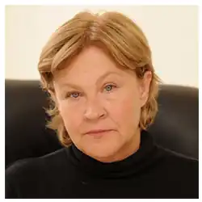

Ірина Іванівна Чернова, відома як Лю́ко Дашва́р — українська письменниця, редакторка, сценаристка та журналістка. На додачу до письменницької діяльності, до 2006 року займалася журналістикою, а після 2006 року — почала займатися написанням сценаріїв для телебачення.
Лавреатка літературної премії Коронація слова: у 2007 році роман "Село не люди" здобув ІІ премію та премію "Дебюту року" від книжкового порталу "Друг Читача", у 2008 році за "Молоко з кров'ю" стала дипломанткою конкурсу, а 2009 року її роман "Рай. Центр" отримав диплом "Вибір видавців".
Народилася у Херсоні 3 жовтня 1957 року. Здобула дві вищі освіти: Одеський інститут легкої промисловості (бакалавр за спеціальністю "інженер-механік") та Академія державного управління при Президентові України (магістр за спеціальністю "державне управління"). Після отримання першої вищої освіти (технічної), працювала за інженерною спеціальністю, одружилася, народила дітей. Потім звільнилася та пішла працювати обліковицею листів у газету. Так у 1986 році розпочала журналістську кар'єру. Через півроку роботи в газеті стала заступницею головного редактора. З 1991 року — головна редакторка херсонської молодіжної газети. Після розпаду СРСР займала посаду голови комітету у справах преси й інформації Херсонської облдержадміністрації. Звільнившись, заснувала власні дві газети у Херсоні, редакцію яких розграбували. Після цього переїздить разом з родиною до Києва. З 2001 року — головна редакторка газети "Селянська зоря". Саме період роботи у "Селянській зорі" письменниця визначає як незабутній життєвий досвід, саме у цьому виданні письменниця вигадала там рубрику "Пам'ятаю все життя", у якій люди, надсилаючи до редакції листи, розповідали в них про єдиний незабутній факт свого життя. Деякий час працювала журналісткою і редакторкою жіночих журналів. Згодом закінчила курси сценарної майстерності голлівудського професора Річарда Креволіна. Відомо, що письменниця також навчалася у школі практичної журналістики та на курсах з нейролінгвістичного програмування З 2006 року займається виключно літературною та сценаристською діяльністю.